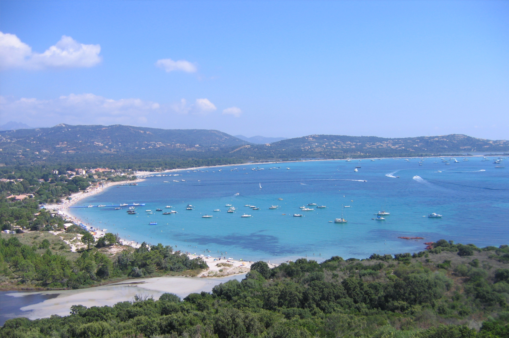

Faites glisser les destinationsUtilisez les flèchesChangez de destinations
Porto-VecchioLa « cité du sel » est la troisième commune la plus peuplée de l'île
AjaccioAjaccio, « cité impériale » et autrefois « cité du corail »
BastiaBastia est la deuxième commune la plus peuplée de Corse
CalviCapitale de la Balagne.
BonifacioLa citadelle vous coupera le souffle
BorgoBaladez-vous dans les ruelles du vieux village
Saint-FlorentA votre arrivée, la place des Portes ou des Ormeaux vous accueille
MonticelloPerché à 218 m d’altitude sur un promontoire «les îles d’or»
Lîle roussePerché à 218 m d’altitude sur un promontoire «les îles d’or»
VenzolascaPerché à 218 m d’altitude sur un promontoire «les îles d’or»
CalenzanaPerché à 218 m d’altitude sur un promontoire «les îles d’or»

Sari-SolenzaraPerché à 218 m d’altitude sur un promontoire «les îles d’or»
Porto-VecchioLa « cité du sel » est la troisième commune la plus peuplée de l'île
C'est le siège principal de la civilisation dite torréenne (IIIe et IIe millénaires av. J.-C.) dont subsistent à Porto-Vecchio les principaux vestiges, au lieu-dit éponyme, Torre. Le port actuel est sans doute fondé ou repris par les Grecs de Syracuse au vie siècle av. J.-C. et se situe à l'emplacement du « Portus Syracusanus » romain.
La région, pourtant fertile, est désertée au Haut-Moyen Âge en raison de la malaria qui l'infeste ainsi que des persécutions des colons génois installés dans la cité de Bonifacio. Du xiiie au xvie siècles, les seigneurs de la Rocca conservent cette contrée sous leur autorité, et les populations autochtones résidant à la montagne continuent à y mener leur bétail durant l'hiver.
Après le passage de la seigneurie de la Rocca sous l'administration directe de la banque de Saint-Georges, les Génois y fondent une colonie et font construire une forteresse dont demeurent de nombreux bastions (1539) afin de se protéger des Barbares. Destinée à être un chef-lieu de juridiction et à permettre la mise en valeur de la plaine, la colonie génoise de Porto-Vecchio se révèle être un échec : du fait de la malaria, de la menace permanente des corsaires turcs mouillant à proximité et des agressions des Corses, la cité est plusieurs fois abandonnée. Après diverses tentatives de peuplement, la république de Gênes décide de favoriser l'installation dans la citadelle des familles insulaires originaires de la montagne, Quenza essentiellement.
Dans le courant du xviie siècle, Porto-Vecchio est de fait peuplée par les populations montagnardes. Cependant la très grande majorité des habitants continuèrent durant des générations à regagner la montagne durant l'été, fuyant le paludisme et empêchant de ce fait un développement réel du lieu. Au cours du xixe siècle, les marécages furent asséchés.
Restée longtemps une petite bourgade par rapport à d'autres villes du sud de la Corse, Sartène ou Bonifacio, elle a bénéficié de l'assainissement des marécages après la Seconde Guerre mondiale, et connut un développement significatif durant l'administration de Jean-Paul de Rocca Serra, pour devenir un centre touristique majeur depuis les années 1980, avec la construction de l'aéroport de Figari notamment.
De nos jours, Porto-Vecchio abrite les résidences secondaires de nombreuses stars, telles Laetitia Casta, Mylène Farmer, Paris Hilton, Nicolas Sarkozy et Carla Bruni.
Vous souhaitez découvrir cette destination ?
Ajaccio Ajaccio, cette "cité impériale" et autrefois "cité du corail"
La première pierre est posée en avril 1492 sur un promontoire appelé Capo di Bolo à l'emplacement prévu pour une forteresse. Un château fort est alors bâti sur une presqu'île permettant une meilleure surveillance du golfe; il se transformera, au cours du XVIe siècle, en citadelle. En même temps, se développe la ville qui loge, alors, sept cents habitants. Les maisons génoises sont simples, à un étage. La toiture est en ardoise et les façades sont percées d'ouvertures étroites.
lles étaient parfois colorées selon la tradition ligure (teintées en terre naturelle) ou recouvertes de chaux. De la fin du XVIe au début du XVIIe siècle, les constructions d'édifices religieux se succèdent: la cathédrale, et les églises de San Rucchellu, Saint-Érasme (ancienne église des Jésuites) et Saint-Jean-Baptiste. L'édification de la maison natale de Napoléon, rue Saint-Charles, a été commencée au mi-lieu du XVIIe siècle. Acte de fondation de la ville: Au nom du Seigneur, Amen. Que tous ceux auxquels parviendra le présent document sachent ce qui suit: Messire Cristoforo de Gandino, architecte, a été commis par le Magnifique Office de Saint-Georges pour la construction, édification et érection d'une forteresse ou château fort en la localité d'Ajaccio de l'isle de Corse.
En 1575, le Sénat de Gênes a concédé à la cité d'Ajaccio des armoiries « d'azur » à la colonne d'argent surmontée des armes de Gênes, accostée de deux lévriers blancs" avec la légende circulaire : "ainsi les Ajacciens envers la république de Gênes".
Dans la première moitié du XVIIIe siècle, ces armoiries furent modifiées en signe d'indépendance à l'égard de Gênes.
Vous souhaitez découvrir cette destination ?
BastiaElle est la capitale de la Bagnaja, région du nord-est de l'île
Dans toute l’histoire de la Corse , il n’y a sans doute pas de symbole qui soit à la fois aussi familier et aussi mal connu que le drapeau à tête de Maure ( ou more ) . Cet emblème héraldique n’est apparu sur les armes des Rois d’Aragon qu’en 1281 mais il semble qu’il fut abandonné au profit des quatre pals dès 1387 . En revanche le même emblème multiplié par quatre n’a jamais cesser de figurer en Sardaigne , comme il est naturel pour une île ou la domination aragonaise a été longtemps effective . Sur la signification de la tête de Maure , les héraldistes sont d’accord . Le Maure n’est pas un esclave mais un Roi , ou du moins un chef tué au combat
Quand au bandeau blanc qu’il porte sur le front ( et non pas sur les yeux et noué derriere la tête , c’est un emblème royal déja connu en tant que tel dans l’Antiquité héllenistique. Plus tard à l’heure ou la signification véritable de la tête de Maure s’était perdue on a ajouté deux attributs secondaires : le collier de perles et les pendants d’oreilles pour renforcer le caractère royal du symbole . Mais ces attributs nouveaux eurent uneconséquence grave , ils transformèrent la tête de Roi vaincu en tête d’esclave et même parfois d’esclavede sexe féminin ,Ainsi le Roi Maure devenait une esclave ... mauresque .
Cette transformation est visible sur certaines cartes du XV11e et du XV111e siècles .D’aucuns prétendent que lorsque les Corses revenaientdans leurs villages après avoir remporté une victoire sur les Maures , ils portaient du bout de leurs piques une tête de leurs ennemis . Comme celles - ci ne pouvait se conserver indéfiniment , les vainqueursdécidèrent de perpétuer en peignant la tête sur des drapeaux blancs . Ce drapeau aurait été jugé séditieux par les Génois qui auraient ramené par dérision le bandeau royal sur les yeux montrant ainsi qu’en perdant leur liberté , ils devenaient aveugles . Pascal Paoli en fit l’emblème de la Corse indépendante , montrant ainsi que la Corse avait retrouvé la vue et la Liberté .
Vous souhaitez découvrir cette destination
CalviCalvi est situé sur une éminence dont la forme ressemble à une balle ronde, et sur le bord de la mer qui l'entoure aux deux tiers
Plusieurs thèses existent : faut il retenir “Calvo” du latin chauve, ou bien “Sinus Casalvi” voulant dire baie ou peut-être encore la racine “Cal” de l’indo-européen, ou peut-être ce nom de “Cales” déjà connu comme celui d’une ville de Campanie, province romaine
Les traces d’occupation romaine en Balagne nous permettent de vous présenter cette thèse chère au regretté Chanoine Alberti qui l’évoquera dans son ouvrage : “Olmia et ses martyrs”. C’est le manuscrit du Vatican appelé Codex 69-33 qui nous offre la possibilité d’en savoir plus sur les probables origines du mot Calvi. Ce texte latin daté du XIIème siècle est probablement réécrit d’après un texte antérieur (à cette époque la citadelle n’existait pas). Ce texte fait référence à “Locus Calvi” : un locus est une cité qui garde ses institutions coutumières. Le locatif latin Calui de Cales a peut-être donné le terme Calvi d’aujourd’hui.
Les nombreux vestiges néolithiques identifiés dans la micro-région de Calvi attestent la présence de l’homme depuis plus de 2000 ans. Après leurs expéditions successives en Corse, entre 259 et 111 avant notre ère, les Romains s’établissent durablement et y développent l’Agriculture. Les grecs sont quant à eux à l’origine de la plantation de milliers d’oliviers et de la fabrication de l’huile sur toute la micro-région qui par la suite empruntera le nom de Balagne qui signifie oliveraie en grec.
Vous souhaitez découvrir cette destination ?
BonifacioLa ville de Bonifacio offre surtout des points de vue magnifiques sur la Méditerranée
L'origine de Bonifacio n'est pas vraiment précisée dans les ouvrages, mais des dates approximatives déclarent sa création entre 828 et 833 par Boniface, marquis de Toscane, qui baptisa la ville. Comme tous les ports de commerce, Bonifacio a une longue histoire et au travers des époques, la ville a subie des mouvances sociales de grandes ampleurs.
Bonifacio est issue d'un conflit guerrier entre Pise et Gênes, ces deux grandes villes se disputant avec acharnement cette citadelle qui était un maillon stratégique militaire et un complexe portuaire sans égal dans la Corse. Dans un premier temps, Pise fût maitresse des lieux jusqu'à la fin du XIIème siècle, or, la réelle fondation de Bonifacio remonte en 1195, la ville fût colonisée par les Gênois qui imposèrent à la ville des modifications militaires structurelles importantes.
Au XIXème siècle, l'agriculture connaît un renouveau grâce au développement de la production locale de corail, de liège, d'huile, des industries de pâtes ou de savon mais également par la pêche "La Tonnara".
Au cœur du maquis, les paysans Bonifaciens, les "pialinchi" construisaient des abris tel que le "barracoun" Bonifacien.
La langue traditionnellement parlée par les habitants de Bonifacio est un dialecte ligure contrairement au corse qui est une langue toscane. En effet, bien qu'elle ait été fondée par les ducs de Toscane, Bonifacio est devenue en 1195, une colonie de la République de Gênes, repeuplée avec des familles génoises qui s'alliaient entre elles ou avec d'autres familles originaires de Ligurie. Le dialecte de Bonifacio est proche de celui de Sardaigne et de Monaco.
Entre le XIIIème et XVème siècle, Bonifacio est une ville imprenable. Au fil des siècles, Bonifacio devient un pôle militaire, maritime et portuaire de la Corse.
Cependant, du fait de sa situation géographique et de son appartenance Génoise, Bonifacio subit les attaques de nombreux assaillants, notamment Alphonse V, Roi d'Aragon, en 1420 qui maintenu son siège pendant cinq mois avant de baisser les armes face à l'intouchable cité qu'était Bonifacio. La légende raconte que les troupes du Roi d'Aragon aurait creusé dans la falaise calcaire, les 187 marches de l'escalier qui porte son nom.
L'Escalier du Roi d'Aragon, le Grain de sable et les falaises calcaire de Bonifacio sont des attraits touristiques incontournable de cette cité antique.
Vous souhaitez découvrir cette destination ?
BorgoL'une des quatre communes composant la plaine de la Marana au sud de l'agglomération bastiaise.
Borgo (U Borgu en Corse) est une ville française, située dans le département de la Haute-Corse et la région de Corse. Ses habitants sont appelés les Borgolais et les Borgolaises.
La commune s'étend sur 37,8 km² et compte 8 064 habitants depuis le dernier recensement de la population datant de 2006. Avec une densité de 213,4 habitants par km², Borgo a connu une nette hausse de 61,4% de sa population par rapport à 1999.
Entourée par les communes de Lucciana, Vescovato et Rutali, Borgo est située à 16 km au sud-ouest de Bastia la plus grande ville aux alentours.
Située à 280 mètres d'altitude, la Rivière Le Bevinco, le Ruisseau de Monte Grosso, le Ruisseau de Rasignani sont les principaux cours d'eau qui traversent la commune de Borgo.
La commune est proche du parc naturel régional de Corse.
Le maire de Borgo se nomme Madame Anne-Marie ANTONIOTTI EP NATALI.
Pour toutes vos démarches administratives, vous pouvez vous rendre à la mairie de Borgo, située Centre administratif, Route de la Gare, aux horaires d'ouverture indiqués sur cette page. Vous pouvez aussi contacter la mairie par téléphone ou par courrier électronique en utilisant l'adresse e-mail de la mairie indiquée ci-dessous.
Saint-FlorentLa côte est baignée par les eaux du golfe de Saint-Florent
Comme nous l'avons dit précédemment, cette petite ville du nord de la Corse a été fondée par les Génois au XVI siècle. Ceux-ci ont battis la citadelle qui surplombe Saint Florent pour resister aux assauts (aragons, francais et ottomans). La cité corse fut reconquise par l'armée de Pascal Paoli, aidée de la flotte de Nelson. Nous avons donc vus à cette époque, une cohabitation Anglo-Corse.
Environ 4 siècles plus tard, durant la seconde Guerre Mondiale, la Corse a été le premier département français libéré. La cité de Saint Florent y est pour quelque chose, en effet en 1943, une compagnie de tabors marocains ont débarqués dans la golfe de Saint Florent et ont combattus (parfois au corps à corps) pour reconquérir Saint Florent, et de la même manière le col menant à Bastia.
Aujourd'hui, il est toujours possible d'observer au sommet du col de Téghime, un canon datant de cette guerre à coté du monuments aux soldats marocains. Mais il est aussi possible de visiter à Bastia, le cimetière Musulman des combattants maghrébins de la seconde guerre.
Pour venir à Saint Florent en avion, nous vous conseillons de débarquer à partir de l'aéroport international de Bastia/Poretta.
Cet aéroport pourtant petite de taille permet de se déplacer dans un grand nombre de ville d'Europe (Paris, Metz, Marseille, Hambourg, Manchester, Londre, Copenhague, Berlin etc ...)
Les compagnies de cet aéroport sont en majeur partie des compagnies tel que Air France et CCM airlines, mais aussi des compagnies Low cost.
Vous souhaitez découvrir cette destination ?
MonticielloUne vue, un refuge, une gastronomie de caractère
Ceint d’Oliviers, Monticello illustre bien le vieil adage affirmant la Balagne comme le grenier de la Corse. Grâce à son microclimat privilégié et sa proximité avec la mer, la région était une plaque tournante économique.
L’implantation de l’ancien château d’Ortica (12é siècle), dont les ruines attestent de la grandeur passée, donne une idée plus précise de l’importance du village à cette époque où la ville littorale de l’Île Rousse n’existait pas.
Le village possède donc un passé et l’on peut encore voir de nombreux monuments, chapelles, ruines et sites archéologiques, attestant de son rôle dans l’histoire de la Corse.
Appartenant à une région aujourd’hui touristique, Monticello a réussi un mariage harmonieux entre développement et tranquillité ambiante. En effet, tout en restant proche du centre urbain qu’est l’Île Rousse, distante de 4 kilomètres, la commune a pu conserver les avantages de la ruralité.
Dotée d’installations sportives performantes, elle propose de nombreuses activités allant du nautisme au mini-golf en passant par les sports équestres et le tennis, sans oublier les randonnées pédestres ou à VTT.
And now, a hundred years after, we see French and British warships again off Alexandria. But this time the Union Jack and the Tricolour are intertwined, and in the streets of Alexandria French and British soldiers and sailors walk arm in arm, while the ancient city is gay with flags and bunting. For big things are brewing in the Levant. Before the eyes of the citizens during the past week was a unique international naval and military pageant—Zouaves, with their blue jackets and red trousers, French infantry in their blue-grey uniform, cavalry with gay tunics, British Jack Tars in blue and white, Australians in sombre khaki, swarthy-skinned Maoris from the Wonderland of the Southern Seas, and dusky warriors from the Punjab. British troops—and especially those young giants from Australia—had the better of the Frenchman in the matter of physique; but there was clear evidence of "grit" in the intelligent, humorous faces of the French, which helped one to understand why, for instance, they are said to be the finest marchers in Europe, and why the Germans never got to Paris!
Vous souhaitez découvrir cette destination ?
L'île RousseUne vue, un refuge, une gastronomie de caractère
Ceint d’Oliviers, Monticello illustre bien le vieil adage affirmant la Balagne comme le grenier de la Corse. Grâce à son microclimat privilégié et sa proximité avec la mer, la région était une plaque tournante économique.
L’implantation de l’ancien château d’Ortica (12é siècle), dont les ruines attestent de la grandeur passée, donne une idée plus précise de l’importance du village à cette époque où la ville littorale de l’Île Rousse n’existait pas.
Le village possède donc un passé et l’on peut encore voir de nombreux monuments, chapelles, ruines et sites archéologiques, attestant de son rôle dans l’histoire de la Corse.
Appartenant à une région aujourd’hui touristique, Monticello a réussi un mariage harmonieux entre développement et tranquillité ambiante. En effet, tout en restant proche du centre urbain qu’est l’Île Rousse, distante de 4 kilomètres, la commune a pu conserver les avantages de la ruralité.
Dotée d’installations sportives performantes, elle propose de nombreuses activités allant du nautisme au mini-golf en passant par les sports équestres et le tennis, sans oublier les randonnées pédestres ou à VTT.
And now, a hundred years after, we see French and British warships again off Alexandria. But this time the Union Jack and the Tricolour are intertwined, and in the streets of Alexandria French and British soldiers and sailors walk arm in arm, while the ancient city is gay with flags and bunting. For big things are brewing in the Levant. Before the eyes of the citizens during the past week was a unique international naval and military pageant—Zouaves, with their blue jackets and red trousers, French infantry in their blue-grey uniform, cavalry with gay tunics, British Jack Tars in blue and white, Australians in sombre khaki, swarthy-skinned Maoris from the Wonderland of the Southern Seas, and dusky warriors from the Punjab. British troops—and especially those young giants from Australia—had the better of the Frenchman in the matter of physique; but there was clear evidence of "grit" in the intelligent, humorous faces of the French, which helped one to understand why, for instance, they are said to be the finest marchers in Europe, and why the Germans never got to Paris!
Vous souhaitez découvrir cette destination ?
VenzolascaUne vue, un refuge, une gastronomie de caractère
Ceint d’Oliviers, Monticello illustre bien le vieil adage affirmant la Balagne comme le grenier de la Corse. Grâce à son microclimat privilégié et sa proximité avec la mer, la région était une plaque tournante économique.
L’implantation de l’ancien château d’Ortica (12é siècle), dont les ruines attestent de la grandeur passée, donne une idée plus précise de l’importance du village à cette époque où la ville littorale de l’Île Rousse n’existait pas.
Le village possède donc un passé et l’on peut encore voir de nombreux monuments, chapelles, ruines et sites archéologiques, attestant de son rôle dans l’histoire de la Corse.
Appartenant à une région aujourd’hui touristique, Monticello a réussi un mariage harmonieux entre développement et tranquillité ambiante. En effet, tout en restant proche du centre urbain qu’est l’Île Rousse, distante de 4 kilomètres, la commune a pu conserver les avantages de la ruralité.
Dotée d’installations sportives performantes, elle propose de nombreuses activités allant du nautisme au mini-golf en passant par les sports équestres et le tennis, sans oublier les randonnées pédestres ou à VTT.
And now, a hundred years after, we see French and British warships again off Alexandria. But this time the Union Jack and the Tricolour are intertwined, and in the streets of Alexandria French and British soldiers and sailors walk arm in arm, while the ancient city is gay with flags and bunting. For big things are brewing in the Levant. Before the eyes of the citizens during the past week was a unique international naval and military pageant—Zouaves, with their blue jackets and red trousers, French infantry in their blue-grey uniform, cavalry with gay tunics, British Jack Tars in blue and white, Australians in sombre khaki, swarthy-skinned Maoris from the Wonderland of the Southern Seas, and dusky warriors from the Punjab. British troops—and especially those young giants from Australia—had the better of the Frenchman in the matter of physique; but there was clear evidence of "grit" in the intelligent, humorous faces of the French, which helped one to understand why, for instance, they are said to be the finest marchers in Europe, and why the Germans never got to Paris!
Vous souhaitez découvrir cette destination ?
CalenzanaUne vue, un refuge, une gastronomie de caractère
Ceint d’Oliviers, Monticello illustre bien le vieil adage affirmant la Balagne comme le grenier de la Corse. Grâce à son microclimat privilégié et sa proximité avec la mer, la région était une plaque tournante économique.
L’implantation de l’ancien château d’Ortica (12é siècle), dont les ruines attestent de la grandeur passée, donne une idée plus précise de l’importance du village à cette époque où la ville littorale de l’Île Rousse n’existait pas.
Le village possède donc un passé et l’on peut encore voir de nombreux monuments, chapelles, ruines et sites archéologiques, attestant de son rôle dans l’histoire de la Corse.
Appartenant à une région aujourd’hui touristique, Monticello a réussi un mariage harmonieux entre développement et tranquillité ambiante. En effet, tout en restant proche du centre urbain qu’est l’Île Rousse, distante de 4 kilomètres, la commune a pu conserver les avantages de la ruralité.
Dotée d’installations sportives performantes, elle propose de nombreuses activités allant du nautisme au mini-golf en passant par les sports équestres et le tennis, sans oublier les randonnées pédestres ou à VTT.
And now, a hundred years after, we see French and British warships again off Alexandria. But this time the Union Jack and the Tricolour are intertwined, and in the streets of Alexandria French and British soldiers and sailors walk arm in arm, while the ancient city is gay with flags and bunting. For big things are brewing in the Levant. Before the eyes of the citizens during the past week was a unique international naval and military pageant—Zouaves, with their blue jackets and red trousers, French infantry in their blue-grey uniform, cavalry with gay tunics, British Jack Tars in blue and white, Australians in sombre khaki, swarthy-skinned Maoris from the Wonderland of the Southern Seas, and dusky warriors from the Punjab. British troops—and especially those young giants from Australia—had the better of the Frenchman in the matter of physique; but there was clear evidence of "grit" in the intelligent, humorous faces of the French, which helped one to understand why, for instance, they are said to be the finest marchers in Europe, and why the Germans never got to Paris!
Vous souhaitez découvrir cette destination ?
Sari-SolenzaraUne vue, un refuge, une gastronomie de caractère
Ceint d’Oliviers, Monticello illustre bien le vieil adage affirmant la Balagne comme le grenier de la Corse. Grâce à son microclimat privilégié et sa proximité avec la mer, la région était une plaque tournante économique.
L’implantation de l’ancien château d’Ortica (12é siècle), dont les ruines attestent de la grandeur passée, donne une idée plus précise de l’importance du village à cette époque où la ville littorale de l’Île Rousse n’existait pas.
Le village possède donc un passé et l’on peut encore voir de nombreux monuments, chapelles, ruines et sites archéologiques, attestant de son rôle dans l’histoire de la Corse.
Appartenant à une région aujourd’hui touristique, Monticello a réussi un mariage harmonieux entre développement et tranquillité ambiante. En effet, tout en restant proche du centre urbain qu’est l’Île Rousse, distante de 4 kilomètres, la commune a pu conserver les avantages de la ruralité.
Dotée d’installations sportives performantes, elle propose de nombreuses activités allant du nautisme au mini-golf en passant par les sports équestres et le tennis, sans oublier les randonnées pédestres ou à VTT.
And now, a hundred years after, we see French and British warships again off Alexandria. But this time the Union Jack and the Tricolour are intertwined, and in the streets of Alexandria French and British soldiers and sailors walk arm in arm, while the ancient city is gay with flags and bunting. For big things are brewing in the Levant. Before the eyes of the citizens during the past week was a unique international naval and military pageant—Zouaves, with their blue jackets and red trousers, French infantry in their blue-grey uniform, cavalry with gay tunics, British Jack Tars in blue and white, Australians in sombre khaki, swarthy-skinned Maoris from the Wonderland of the Southern Seas, and dusky warriors from the Punjab. British troops—and especially those young giants from Australia—had the better of the Frenchman in the matter of physique; but there was clear evidence of "grit" in the intelligent, humorous faces of the French, which helped one to understand why, for instance, they are said to be the finest marchers in Europe, and why the Germans never got to Paris!